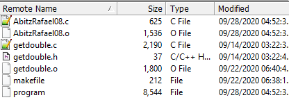

The Hypotenuse Solver is a command-line based program that I developed for my ICS 212 class using the C programming language. The goal was to create a simple yet powerful program that utilized math functions to calculate the hypotenuse of a right triangle with randomly generated side lengths.
When you run the program, it automatically calculates the hypotenuse of a right-angle triangle with side lengths randomly generated between 1 and 255. This provides users with an initial result to explore.
Additionally, the program allows you to input your own values for each side of the triangle, enabling you to calculate the hypotenuse based on specific inputs. Furthermore, the program offers the option to find the sine, cosine, and tangent of angles in radians.
The Hypotenuse Solver harnesses the power of various math functions available in the C language. These functions include:
sqrt() to calculate square roots,srand() for generating random numbers,pow() for computing powers,sin() to find the sine of an angle,cos() to determine the cosine of an angle, andtan() to calculate the tangent of an angle.Developing this program provided me with valuable insights into coding with C, which proved to be a different experience compared to Java. As only the second language I had learned after Java, I encountered new challenges and opportunities to expand my programming skills.
I particularly enjoyed incorporating the srand() function to simulate randomness, adding an element of unpredictability to the generated side lengths.
The Hypotenuse Solver was a rewarding project, demonstrating my proficiency in C and my ability to create useful command-line programs. By exploring various math functions and implementing the random side lengths, I honed my programming abilities and deepened my understanding of C.